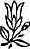

Sevgili Bhagwan,
İnsanın kendini sevmesi ne demektir?
İnsan işe kendini sevmekle başlamamalı… çünkü kim olduğunuzu bilmiyorsunuz; kimi seveceksiniz? Eğer kendinizi sevmekle başlarsanız sadece sizin özünüz olmayan, sahte kişiliğiniz olan egonuzu seversiniz. Ve hemen herkes kişiliğinin egosunu sever. En çirkin kadına bile 'Ne kadar güzelsin' dediğinizde bunu kabul etmeden edemez.
Şöyle bir hikâye duydum: İki yaşlı adam köşede karşılaşır. 'Son sekiz haftadır nerelerdeydin?'
'Hapiste,' der ikinci adam.
'Hapiste mi? Nasıl oldu?' der birincisi.
İkinci adam yanıtlar, 'Sekiz hafta önce köşede duruyordum ve genç, güzel bir kız bir polisle gelip şöyle dedi, 'İşte, adam bu, memurum. Bana saldıran adam bu.' Ve bilirsin işte, o kadar gururum okşandı ki itiraf ettim.'
Doğru olmadığını pekâlâ bildiğiniz ne kadar çok şey itiraf ettiniz? İnsanlar ne kadar sevgi dolu, ne kadar içten, ne kadar güzel, ne kadar dürüst olduğunuzu söylüyor ve bunu asla inkâr etmiyorsunuz. Benim bahsettiğim sevgi bu değil.
Evet, kendinizi sevmenizi isterim, çünkü kendinizi sevmedikçe başkalarını sevemezsiniz. Eğer kendinizi sevmediyseniz sevginin ne olduğunu bilmezsiniz. Fakat kendinizi sevmeden önce tanımanız gerekir. Bu nedenle bu ikinci sıradadır, meditasyon ise birinci sırada.
Ve mucize şu ki eğer meditasyon yapıp yavaş yavaş egonuzdan ve kişiliğinizden çıkmaya ve gerçek özünüzü anlamaya başlarsanız sevgi kendiliğinden gelir. Bir şey yapmanıza gerek yoktur, kendiliğinden çiçek açar. Fakat sadece belli bir ortamda çiçek açar ve ben bu ortama meditasyon diyorum. Bu sessizlik ortamında, zihinsiz, hiçbir rahatsızlığın olmadığı, tümüyle net, huzurlu ve sessiz ortamda birden içinizde binlerce çiçeğin açtığını görürsünüz. Ve bu çiçeklerin kokusu sevgidir.
Doğal olarak, önce kendinizi seveceksiniz, bu sizin ilk karşılaşmanız olacak. Önce içinizde yükselen kokunun ve içinizde doğan aşığın farkına varacaksınız ve üstünüze saadet yağacak. O zaman sevgi doğanız olacak; o zaman pek çok şeyi seveceksiniz; o zaman her şeyi seveceksiniz.
Aslında cehaletimizde ilişkiyi biliriz, farkındalığımızda ise artık ilişki yoktur. Ben seni seviyorum değil; ben sevgiyim. Farkı anlamalısınız.
'Seni seviyorum’ dediğiniz zaman, ya diğerleri? Ya tüm varoluş? Sevginiz ne kadar darsa o kadar hapsolmuştur. Kanatları kesilmiştir; gökyüzünde uçamaz; altın bir kafesin içindedir. Kafes güzel, fakat kafesin içindeki kuş gökyüzünde kanatlarını açmış uçarken gördüğünüz kuş değildir.
Sevginin bir ilişki, bir daralma değil, bir genişleme olması gerekir. Sevgi sizin niteliğiniz, karakteriniz, varlığınız, ışıltınız olmalıdır. Tıpkı güneşin özel olarak kimseye ışınlarını yaymaması gibi, meditasyon da sevgiyi herkese yayar. Tabii önce bu kişinin içinde hissedilir, sonra etrafa yayılmaya başlar. O zaman sadece insanları sevmekle kalmazsınız- ağaçları, kuşları seversiniz -sadece seversiniz -siz sevgisinizdir.
Soruyorsunuz, ‘Kendimi sevmek ne demek?'
Meditasyon demek. Kendiniz olmak demek, o zaman doğa ödül olarak sevgi verir. Yalnız rahipleri dinlemeyin. Onlar sevgi düşmanıdır. Onlar dünyaya kendinden nefret etmeyi ve dünyadan nefret etmeyi öğretiyorlar, çünkü ya doğanızın bir günah olduğunu ya da geçmiş hayatınızdaki kötü edimler nedeniyle bu dünyada ıstırap çektiğinizi öğretiyorlar.
Fakat hiçbir din sevinciyle, neşesiyle bu dünyayı bir armağan, layık olmadığınız, hiçbir hak iddia edemeyeceğiniz, sizin kazanmadığınız bir ödül olarak kabul etmez.
Onun için öncelikle rahiplerden kaçının. Onlar size yaşamı olumsuzlayan değerler öğrettiler ve benim buradaki çabam yaşamı olumlamayı geri getirmek.
Ben buna kendini sevmek diyorum; kendini bir günahkâr olarak kabul etmemek.
Eğer bir günahkâr olduğunuzu düşünüyorsanız kendinizi nasıl kabul edebilirsiniz ki?
Kendinizin suçtan başka bir şey olmadığınızı, geçmişteki milyonlarca hayatın kötü edimlerinin bir toplamı olduğunu düşünüyorsanız kendinizi nasıl sevebilirsiniz ki? Kendinizden nefret edersiniz.
Rahiplerinizin yapmaya çalıştığı da bu: yaşamı reddet, yaşamdan nefret et, zevkten nefret et, her şeyden nefret et ve cennete gitmek istiyorsan her şeyi feda et. Kimse cennetten dönmedi, bir yerde cennet falan olduğunun kanıtı yok. Bu sadece asla bir sonuca varamayan kısır bir tecrübe.
Yaşlı rahip cemaatini günah hakkında uyarıyordu.
‘Günah,’ dedi, 'büyük bir köpeğe benzer. Büyük bir onur köpeği ve büyük bir kıskançlık köpeği ve büyük bir açgözlülük köpeği ve nihayet büyük bir seks köpeği vardır. Ve bu köpekler sizi öldürüp cennete gitmekten alıkoymadan önce siz bu köpekleri öldürmelisiniz. Bunun yapılabileceğini biliyorum, çünkü yıllarca ben de bunu yaptım. Büyük kıskançlık köpeğini, büyük onur köpeğini, büyük açgözlülük köpeğini öldürdüm -ve evet, çocuklarım, büyük seks köpeğini öldürdüm.'
'Peder,' diye bir ses geldi arkalardan, 'son köpeğin doğal bir şekilde ölmediğinden emin misiniz?'
Doğayı değiştiremezsiniz. Doğal olarak yaşarsanız dönüşümler gelir. Dönüşümler geldiğinde de seks ortadan kalkar -fakat sizin çabanızla değil-. Sizin çabanızla seks etrafınızda bekler durur. Onu ne kadar bastırırsanız o kadar büyür. Onu ne kadar yaşarsanız onu aşma olasılığınız o kadar çok olur.
Yaşlı bir çift bir akşam evde oturmuş radyoda inançla iyileştiren bir adamı dinliyorlardı.
‘Pekala millet,’ diye başladı adam, 'Tanrı hepinizi iyileştirmek istiyor. Tek yapmanız gereken bir elinizi radyoya koyup diğer elinizi de hasta olan bölgenize koymak.'
Yaşlı kadın kalkıp ayaklarını sürüyerek radyoya gitti elini romatizmalı kalçasına koydu. Sonra yaşlı adam ayağa kalkıp bir elini radyoya diğer elini de önüne koydu.
Karısı ona aşağılayarak bakıp şöyle dedi, 'Seni yaşlı ahmak. Adam hastayı iyileştireceğini söylüyor -ölüyü ayağa kaldıracağını değil!'
Doğal bir şekilde, huzurlu bir şekilde, içsel bir şekilde yaşayın. Sadece yalnız kalarak, sessiz kalarak, sadece zihninizin iç sahnesini izleyerek kendinize biraz zaman tanıyın. Yavaş yavaş düşünceler kaybolur. Yavaş yavaş zihin bir gün sanki orada hiçbir şey yokmuş gibi öyle sessizleşir ki. Sadece bu sessizlik… o anda burada değilsinizdir.
İçinizdeki bu sessizlikte yaşamın yeni bir boyutunu bulacaksınız. Bu boyutta açgözlülük yoktur, seks yoktur, öfke yoktur, şiddet yoktur.
Bu sizin için bir itibar değildir; bu zihnin ötesindeki, sevginin biyolojik dürtüyle kirlenmeden saf olarak var olduğu yeni boyuttur; şefkatin hiçbir nedenle var olmadığı -cennette ödüllendirilmek için değil, çünkü şefkat kendi başına bir ödüldür- yeni bir boyut.
Ve içinizde keşfettiğiniz tüm bu hazineyi paylaşmak ve evlerin tepesinden insanlara, 'Zavallı değilsiniz, cennet sizin içinizde. Dilenci olmanız gerekmez; imparator olarak doğdunuz, sadece imparatorluğunuzu keşfetmeniz gerek’ diye bağırmak için derin bir özlem duyarsınız.
İmparatorluğunuz bu dünyanın dışında değil, imparatorluğunuz kendi içinizdir. O içinizdedir ve eve dönmenizi bekleyerek hep de oradaydı.
Sevgi gelecek, bol bol gelecek -o kadar ki hepsini içinize alamayacaksınız.
İçinizden taştığını, her yana yayıldığını göreceksiniz.
Sadece gizli ihtişamınızı keşfedin. Yaşam sadece bir şarkı olabilir -sevinç şarkısı. Yaşam sadece bir dans, bir kutlama, sürekli bir kutlama olabilir. Öğrenmeniz gereken tek şey yaşamı onaylayan bir yaşam tarzıdır.
Ben sadece yaşamı onaylayan kişiye dindar derim. Yaşama karşı olanlar kendilerine dindar diyebilirler; fakat değillerdir. Üzüntüleri dindar olmadıklarını gösteriyor Ciddilikleri dindar olmadıklarını gösteriyor.
Gerçek bir din adamının mizah anlayışı olur. Bu bizim evrenimiz, bizim evimiz. Biz yetim değiliz; bu yeryüzü bizim annemiz, bu gökyüzü bizim babamız. Tüm bu evren bizim için ve biz de onun içiniz. Esasında, bizimle bütün arasında hiçbir ayrım yok. Organik olarak onunla birlikteyiz, tek bir orkestranın parçasıyız.
Bu varoluş müziğini dinlemek benim gerçek olarak, geçerli olarak kabul edebildiğim tek din. Onun hiçbir kutsal kitabı yoktur, olmasına ihtiyacı yoktur- Hiçbir tanrı heykeli yoktur, çünkü hiçbir varsayıma inanmaz, ibadet edeceği hiçbir şeyi yoktur, sadece sessiz olmalıdır ve bu sessizlikten minnet, dua gelir ve tüm varoluş tanrısallığa dönüşür.
Şahıs halinde bir tanrı yoktur.
Tanrı her yere yayılmıştır -ağaçlara, kuşlara, hayvanlara, insanlığa. Canlı olan her şey kanatlarını açmaya hazır, özgürlüğe, bilincin nihai özgürlüğüne uçmaya hazır tanrısallıktan başka bir şey değildir.
Evet, kendinizi seveceksiniz ve tüm varoluşu da seveceksiniz.
The Invitation,
30. Toplantı
5 Eylül 1987